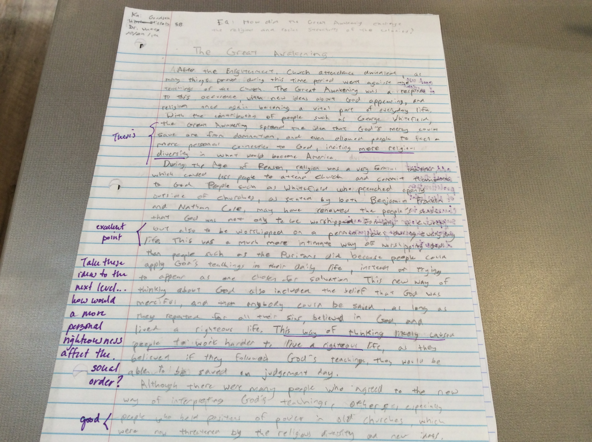
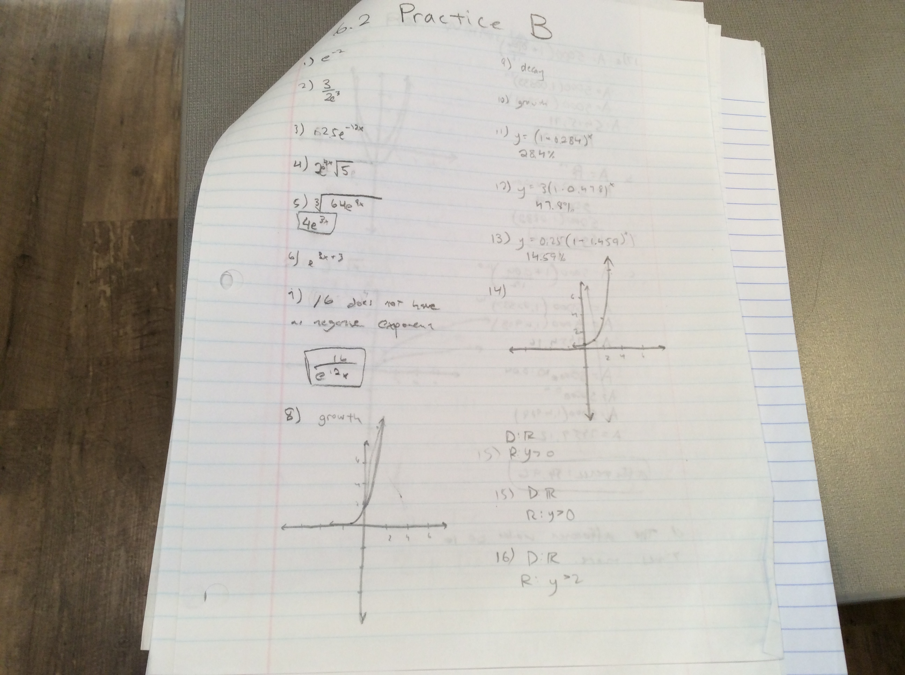

My Artifacts
My Best Work This Year
My Literature Artifact
My Trimester 1 Humanities Essay

This is my trimester 1 Humanities essay.I believe this reflects my strength, because I had to work under tight time constraints on this relatively long essay. Although I did not get an a on this essay, I believe it was a good ending to my first trimester.
My US History Artifact
My Great Awakening Essay

This is my Great Awakening Essay. I believe this also shows my strength, as I was able to get a good grade on this essay, even though it was one of the first essays of the year. Because my essays in 7th grade were not as long, I feel that my strength helped me a lot on this assignment.
My Math Artifact
My Math Homework

This is an example of my math homework. I believe this reflects my habit of mind of producing quality work, as the homework is fairly organized and shows my workn clearly.
My Spanish Artifact
Mis Veranos Cuando Era Pequeno Project

This is one of my spanish projects I did this year. I believe this shows how I still need to work on my SMART goal, to not procrastinate, because I ended up procrastinating on this project, and I did nto have enough time to write everything I wanted to express.
Home
My Questions
My Artifacts
Extracurricular Activities